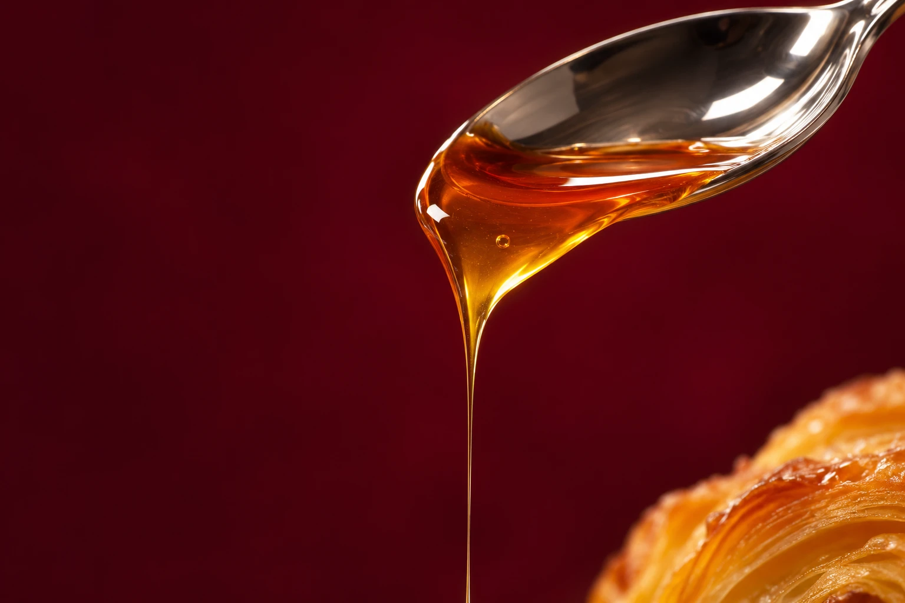

Сезонный предзаказ
Сезонная
печь
Штоллен с цукатами и пряностями к Рождеству. Воздушный панеттоне на закваске к Пасхе.
Выбрать выпечкуНовый год и Рождество
Штоллен
Под сахарной пудрой — плотный ароматный мякиш. Срез открывается то тёмной ягодой, то золотистым марципаном. К празднику штоллен упаковываем в подарочную коробку.
Предзаказ до 20 декабря
Штоллен с марципаном в разрезе
Пасха · 2 мая 2027
Панеттоне
Тесто созревает несколько дней на закваске Lievito Madre. Сливочное масло, цветочный мёд и стручковая ваниль дают тот самый аромат, а мякиш тянется тонкими волокнами.
Предзаказ до 25 апреля
Панеттоне в руках пекаря
Скоро в коллекции
Фудкейк
Фудкейк готовится к премьере. Состав и даты выдачи появятся здесь, когда откроется предзаказ.
Выбрать штолленВыдача в Мытищах
Как забрать заказ
Укажите желаемую дату в заявке. Пекарня подтвердит стоимость, день и адрес, где вас будет ждать выпечка.
+7 (985) 227-05-61